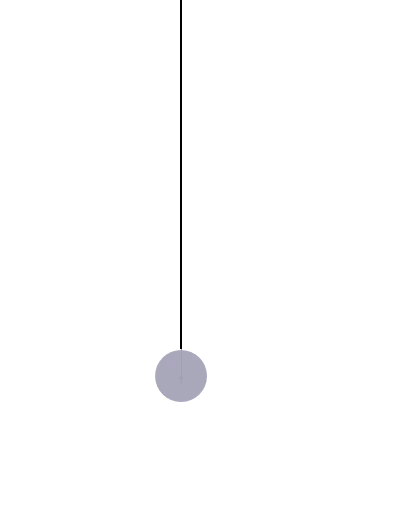
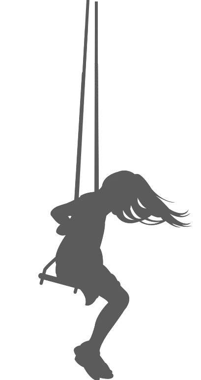

Idealizing the real world systems
Here we strip away details we consider unnecessary to solving the problem at hand. We also simplify the system to make it easier to understand
- Instead of considering multiple pistons we consider only one.
- Instead of using combustion as a mode of expanding and contracting the gas, we move the
piston on heat baths.
- We assume that the heat baths can provide and take infinite energy and are maintained at
constant temperatures.
- The stages used for resting the piston exchanges no heat and the gas is perfectly
isolated on the three other sides
- We further assume that the gas inside the piston is idea and and that there is no friction between the walls.
Let us now place the system in a mathematical grid !

